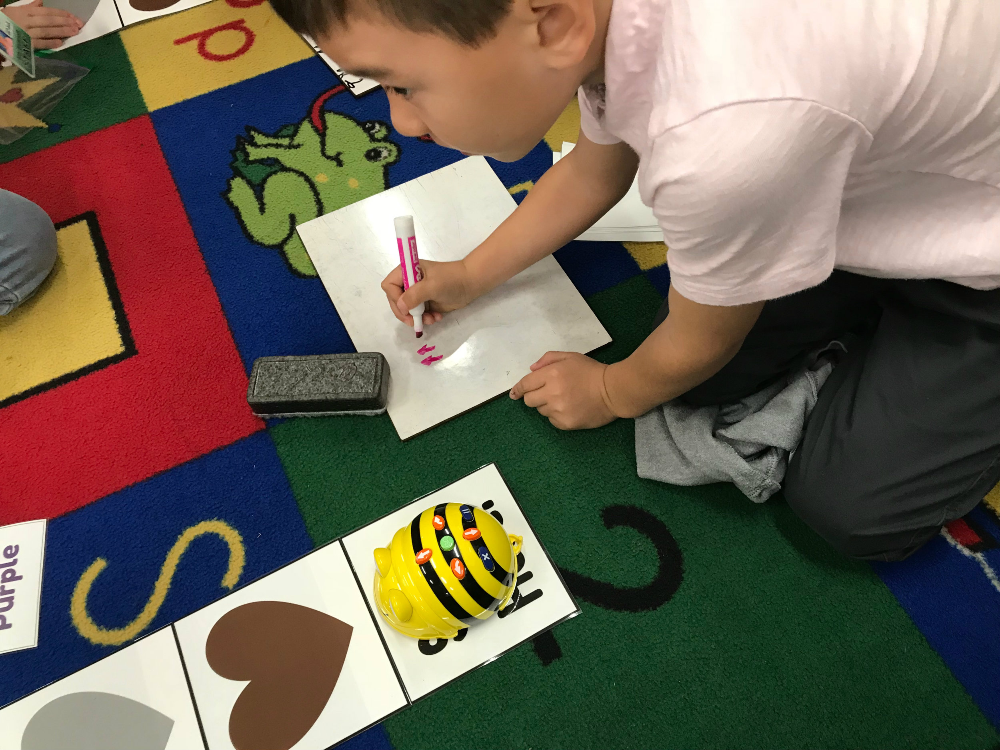
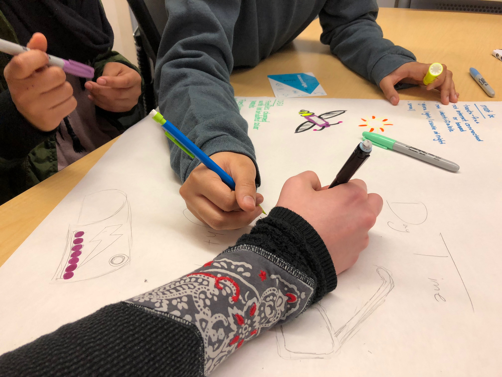

Coding & Social Studies Can Go Hand-In-Hand
Amazon Go allows us to walk in and walk out without waiting in line for a cashier. Human drivers may also need to think about reskilling as well - as cars are being driven more and more reliably by computers. And with millions or even billions of dollars at stake, some may feel more comfortable with computers, rather than humans to spot trends - faster and more accurately - than a human counterpart. These are only a few of the 800 million reported jobs that may be lost to computers according to the BBC by 2030. According to Code.org, current trends only predict 400,000 students studying computer science to potentially fill these positions.
We have no time to waste.
As educators, we can begin to prepare students for the inevitable shift in the global workforce by integrating computer science into our curriculum. This will mean teachers have a learning curve. But it provides a perfect opportunity to model that as teachers we are also lifelong learners. Building learning opportunities of this caliber will be most successful if we collaborate, so it will model teamwork. But mostly, it will model the perseverance for our students that they are going to need to thrive.

We had an opportunity to build a fifth grade interdisciplinary unit. It was truly a team effort! Lisa (K-8 Instructional Technology Coach), Stephanie (High School Computer Science Teacher), Marcie & Kelly (5th Grade Teachers), and an outstanding team of High School Mentors (aka - Future Rulers of the Free World)... worked together to create a five-week American Revolution social studies/language arts/computer science unit. In a nutshell: students would select one of the battles of the American Revolution to retell through Scratch programming.
While the planning and resources and lessons were part of the puzzle, the missing piece was the high school mentors. Each week, twenty-plus high schoolers flooded into the classrooms. The fifth graders ate this up. Each classroom had two high-school students that were actually in charge of delivering the content. The fifth-graders received the instruction enthusiastically. The support of mentors is simply crucial. Whether coding comes naturally to teachers or not. An instinctive and undeniable bond forms between the two age groups that challenges the younger students to power through road blocks, challenges young students to keep exploring, and shows them it is cool to code.
Content was delivered through Google Classroom. This allowed us to organize content easily. Address questions remotely through Classroom Comments. Post relevant and helpful tutorials. Allow students to share projects and even to respond to peer’s questions.
Lesson One:- What is Coding & What is Scratch?
- Log onto Scratch (We used a Teacher Account to have access to all Ss projects)
- American Revolution Battle Research/Selection - this would be done in pairs
- Storyboard Technique - program planning
- Scratch Basics
- Import Background to Stage
- Import Sprites, use custom editor to change Background to transparent
- Use Broadcast to code a conversation between two Sprites
- Complete scene 1 of their Storyboard
- Use Model to demonstrate
- Share how to use Media in Google Classroom
- Discuss how to post & respond to questions in Google Classroom
- Scratch Basics
- Import a second Background
- Import a Sprite for the second Scene
- Use “Broadcast” to change Scenes
- Scratch Basics
- Animate a Sprite
- Discuss Demo Slam Sign-ups (Ss can share a tip or trick that they have learned in Scratch - 60 seconds or less - during Lesson Five)
- Discuss how to Share Projects
- Complete Projects
- Demo Slams
- Celebrate!
This unit was a big one. It took a lot of people to put together. We pulled a lot of resources. We reached a lot of students. Not every lesson has to be this big! The key was that we got students to create a story in code… they programmed part of the American Revolution come to life. We encouraged exploration. Ultimately, this turned into a collaborative experience. The fifth grade students were doing some shared programming and they were collaborating with the high school students. While there was a learning curve, students learned that the problem-solving was part of the process.
Along the way students learned a few core programming concepts. All of the lesson materials for the five-week project can be downloaded from our Google Drive.
California K-12 CS Standards (DRAFT): 3-5.AP.11, 3-5.AP.12, 3-5.AP.15 - 3-5.AP.19
Computer Science + Kinders = The Perfect Lesson Plan
Even our littlest learners are diving into complex problem solving, debugging, meaningful collaboration, and programming. And it is a remarkable, exciting thing. Our kindergarten students have been working on their programming with BeeBots - small, friendly little robots that students love to code. The BeeBots provide a balance of autonomy and mastery, challenge and satisfaction to create the a motivational firestorm. The little robots tap into human motivation - they encourage students to try their hardest because the programming offers a challenge, but not overly challenging.
We started with a quick, low-cognitive load programming challenge. Students programmed the robots to cruise to a color. It was Valentine’s Day, so we used hearts! It was easy and quick to differentiate and level-up groups that needed a deeper challenge by adding more than one (two or even three colors). In small groups, students developed a program (on a whiteboard - this was sustainable, flexible and easy to prep). The students then tested out their program. Lots of collaboration and communication happening - five-year-olds proving that we are hard-wired to collaborate inclusively as these little humans left no one out! If the BeeBot did not make it to the correct color, students then ‘debugged’ their code collaboratively and creatively until the program executed successfully.
Soon, students had a base knowledge and were ready for some real challenge. Layering content on top of the programming adds complex, critical thinking. It changes a typical literacy station or whole group task into something that will really lay the foundation for computational thinking tasks that our students will be faced with in the future and work their brains in new and astonishing ways.
Students had the opportunity to do several different tasks over the next couple of weeks. We began with a phonemic awareness activity. Students would program the BeeBot to navigate to images that began or ended with /Pp/. When we changed the starting location of the BeeBot, the challenge became significantly harder. I love how easy it is to quickly level-up challenges when students are ready.
Students then presented with a CVC word task. These materials are typically readily available in a primary classroom. They may even come with a ELA adoption materials. We used CVC picture cards, letter dice, and the BeeBot Alphabet Mat. Students selected a card, spelled the word, then programmed the BeeBot to spell the word on the alphabet mat. On the spot, educators can differentiate by having students that are only ready to find the beginning or ending sound code this program. And those students that are ready to program a three-letter-word (or more!) can.
Finally, students studied the African Savanna while programming. We created images that amplified the unit of study to use with the BeeBot Card Mat. Students would select a clue card and determine which image matched the clue. The students programmed the BeeBot to navigate to the corresponding image.
The students exhibited impressive collaboration and communication skills. One student captured the code on the whiteboard. One student programmed the BeeBot. The group all helped to program and debug… and all students became cheerleaders! It was epic! While the initial lesson was in a small group with a teacher, the students were then able to use the materials independently in centers. Students were quickly empowered to write their own programs, run their own station. This is the type of agency that we need to offer all students.
Not too long ago, I saw a tweet that resonates with me. It floats around as I lesson plan: ‘Our kindergarteners will graduate in 2030. Is the activity we are asking our students to do preparing them for life in 2030? - Alice Keeler.’ I appreciate that we can add the layer of computational thinking to our more traditional tasks and feel confident that our students are doing work that is challenging and motivating. Our students have so many programming opportunities and challenges in their future that will undoubtedly lead to personal and global rewards. These kindergarteners are getting ready to change the world.
Download our CSforTeachers activity materials here.
California K-12 CS Standards (DRAFT): K-2.AP.12, K-2.AP.16
Empathy and Design Thinking
Spring Semester arrived. For my high school school senior level computer science (CS) capstone course students this meant diving into their semester-long capstone project. The capstone is a culminating experience for students that climbed through the CS four-year pathway. The project is designed to encourage my CS students to foster empathy, think critically, find and solve a challenging problem, research, collaborate, and promote self-efficacy and time management. Impressive ideas floated around the classroom - including an app to help teenagers with depression, a campus map app to help students find their way around, a gift idea app, and a wrist device for tracking movements.
Unfortunately, we have all experienced the frustration of bad user design, both in software and consumables. This is something CS students will consider when creating their products. To encourage this design thinking, students participated in a user-centered-design task and practiced empathy to contemplate how their users would experience their products.
The activity used the Extraordinaires® Design Studio, a powerful design tool that challenges young designers by stretching and exercising their creative muscles in a fun and engaging way.
Students worked in teams and designed a product to fit unique requirements around one of the The Extraordinaires® - over the top characters with extraordinary needs. The task challenged assumptions and encouraged students to view themselves and the world around them in new and divergent ways.
Students worked in teams of four and were challenged with a user with extraordinary needs and an item they had to design. One group was tasked with designing a light for a flying pixie, another a cooking utensil for a ninja. As I walked around the room, what struck me was the “magical” thinking the students were using to design think. Their products were designed without real-world limits - the kind of thinking needed for real innovation. I wondered at which point do adults tend to lose “magical” thinking? Ten years ago, carrying around a computer as a phone would have been “magical” thinking - as we integrate computer science standards into our curriculum, let’s remember to include “magical” thinking as well.
For more ideas on design thinking, visit the Teachers Guild.
The Who, What & Why of Comp Sci
Computer Science is tackling problems and the art of telling the computer how to express solutions. Computer science is a field of study that solves real-world problems. In the end, it is about learning the language of the computer, so that we can make the computer do what we want it to do. First, our students need to gain conceptual knowledge of computing technology, then apply that knowledge by creating computational artifacts.
Computer science is focused on problem solving and although closely related, is different from computer literacy, educational technology, digital citizenship, and information technology which focus on use. Computer Science and programming is one of the best ways to have impact on the world and therefore is a fundamental piece of a student’s education. There is no other line of work that will touch as many lives as computer science. There is no other line of work that has such incredible opportunities our globally connected economy. We need a broad range of perspectives to have input to affect real and needed change - and therefore, it is crucial that we encourage every single one of our students to explore computer science.
Computer Science concepts and practices are for every student. Just think of the technology that make it easier to get through day. Helping students look for the situations and problems to solve and actually creating avenues to transform the way run our lives is exciting, empowering, and advantageous. Because some of these problems are so large and computers are basically immense systems, it is best to work in teams. Therefore developing collaborative environments and protocols are paramount.
The benefits are there even for students who do not choose to pursue a computer science field. The type of problem solving and critical thinking involved in computer science will support any student’s future. The practice will allow them to immerse themselves into challenges that are cognitively challenging, provide opportunities for communication skills to develop, permit students unique creation moments, and provide collaborative spaces.
Are you ready?
Image Source: Shutterstock Web Concept by karpenko ilia